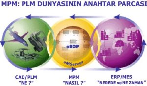

|
 Þu
anda imalat yapan her firmada istisnasýz bulunan CAD/CAM/CAE
yazýlýmlarý, bundan 10 sene önce firmanýn alýnacaklar listesinde
bulunmamaktaydý. Geçen bu süre içerisinde yazýlýmlarýn büyük
otomotiv firmalarýnda tam performansla kullanýlmaya baþlamasýnýn
ardýndan bu büyük firmalar yan sanayilerini ve irili ufaklý
çalýþtýklarý tüm þirketleri bu konuda yatýrým yapmaya zorladýlar.
Bu yazýlýmlarý kullanarak ana sanayi ile ayný dili konuþmaya
ve birbirini daha iyi anlamaya baþlayan firmalar geliþip büyümeye,
bu teknolojilere ayak uyduramayanlar ise ana sanayiden iþ
alamamaya ve pazar paylarýný kaybetmeye baþladýlar. Þu
anda imalat yapan her firmada istisnasýz bulunan CAD/CAM/CAE
yazýlýmlarý, bundan 10 sene önce firmanýn alýnacaklar listesinde
bulunmamaktaydý. Geçen bu süre içerisinde yazýlýmlarýn büyük
otomotiv firmalarýnda tam performansla kullanýlmaya baþlamasýnýn
ardýndan bu büyük firmalar yan sanayilerini ve irili ufaklý
çalýþtýklarý tüm þirketleri bu konuda yatýrým yapmaya zorladýlar.
Bu yazýlýmlarý kullanarak ana sanayi ile ayný dili konuþmaya
ve birbirini daha iyi anlamaya baþlayan firmalar geliþip büyümeye,
bu teknolojilere ayak uyduramayanlar ise ana sanayiden iþ
alamamaya ve pazar paylarýný kaybetmeye baþladýlar.
Þimdi
ise adýna MPM denilen yeni bir dalga bütün otomotiv ve havacýlýk
ana sanayisini etkilemeye baþladý. Açýlýmý "Üretim Süreç
Yönetimi" olan MPM; üretimle ilgili yatýrýmlarýn getirisini
arttýrmaya yarayan bir iþletme stratejisidir. Öncülüðünü Tecnomatix
firmasýnýn yaptýðý bu MPM çözümleri; bir þirketin tedarik
zinciri boyunca, ürünlerinin nasýl üretileceðinin tanýmlanmasý,
üretim sahasýnýn gerçek zamanlý kontrolü ve hakimiyetinin
saðlanmasý ve sonuç olarak gerekli üretim yöntemlerinin tasarlanmasýndan
iþleme konulmasýna kadar geçen bütün safhalarýn yönetilmesini
içerir.
Dünya
çapýndaki otomotiv firmalarýnýn yavaþ yavaþ tedarikçilerini
kullanmaya mecbur ettiði bu çözümlerin Türkiye'deki temsilciliðini
Boðaziçi Yazýlým A.Þ. yapmaktadýr. Türkiye pazarýna da giriþ
yapan MPM çözümlerinden en önemlileri eM-Plant, eM-TolMate
ve eM-Workplace'dir.
eM-Plant
-Fabrika, Üretim Hattý, Süreç Simülasyonu ve Optimizasyonu
eM-Plant
sayesinde üretimle ilgili her türlü süreç ve sistemin simülasyon
ve optimizasyonunu yapabilirsiniz. eM-Plant'i kullanarak malzeme
akýþýný, kaynaklarýnýzýn kullanýmýný ve her seviyedeki lojistik
ihtiyacýnýzý optimize edebilirsiniz.
Þirketler,
bu yazýlýmý, günlük sipariþ adetlerinin o gün üretilip üretilemeyeceðini
görmekte; yeni yatýrýmlarýn ve geniþleme planlarýnýn gerçekten
beklenen üretim adetlerine ulaþýp ulaþamayacaðýný tahmin etmekte;
kafalarýndaki üretim fikirlerinin ana sanayiye bir simülasyon
üzerinde gösterilip ispatlanmasýnda kullanmaktadýrlar.
Türkiye'de
de bu konularda ilk çalýþmalar yapýlmaya baþlandý bile. Arçelik,
yeni kuracaðý elektrik süpürgesi üretim hattý konseptini ilk
önce eM-Plant ile analiz etti. Bu sayede normal þartlarda
ve kaðýt kalem hesaplamarýyla ön görülemeyecek darboðaz ve
verimsizlikleri farkederek gerekli deðiþiklikleri ilave bir
maliyet olmadan, tasarým esnasýnda yapmýþ oldu.
Yine
yurtdýþýndaki otomotiv ana sanayilerinin isteði sonucu Bursa'da
üç yan sanayi firmasý, üretim hatlarýnýn gerçekten beyan ettikleri
üretim adetlerine istenilen kaliteyle ulaþabileceðini eM-Plant
simülasyonlarý ile ispatladý.
eM-TolMate
- Doðru Ýmalat Toleransý ve Doðru Maliyet
Birçok
CAD platformuyla entegre çalýþabilen eM-TolMate ulaþýlmak
istenen tasarým hedefiyle uyumlu doðru tolerans ve maliyet
dengesini bulmanýzý saðlar. Bilindiði gibi gereðinden sýký
verilen toleranslarýn imalat maliyetlerine, gereðinden gevþek
verilen toleranslarýn ýskartaya çýkan parça adetlerine etkisi
olacaktýr.
Geçmiþte
tolerans ve teknik resimler ana sanayi tarafýndan saðlanýrken,
artýk yan sanayiden ürün geliþtirici olmalarý beklenmektedir.
Ýþte bu sebepten gereksiz maliyetlerden kurtulmak amacýyla
imalat toleranslarýn büyük bir hassasiyet ile belirlenmesi
gerekiyor. eM-TolMate, daha ürün üretilmeden doðru tolerans
deðerlerini tahmin etmenizi saðlar.
TOFAÞ'ta
mühendisler geometrik boyutlandýrma ve toleranslandýrmayý
eM-TolMate yardýmýyla yaparak gereksiz imalat maliyetlerinin
ve kusurlu parçalarýn önüne geçebilmektedirler. Yakýn bir
zamanda üretici olmanýn yaný sýra ürün geliþirici olmalarý
da gerekecek yan sanayi firmalarýnýn da bu adýmlarý atmalarý
gerekecek.
eM-Workplace (eski adýyla Robcad), Robot Hücrelerinizi
programlamak için endüstri standardý Sanal Üretim Ortamý
eM-Workplace
ile robot kullanan, otomatize edilmiþ üretim süreçlerinizin
tasarým, simülasyon, optimizasyon, analiz ve programlamasýný
yapabilirsiniz. eM-Workplace çok güçlü, sürece özel uygulamalarý
da içerir. Bu uygulamalara örnek olarak punta kaynaðý, ark
kaynaðý, lazer ve su jetiyle kesme, delik delme ve boyama
verilebilir.
Türkiye'de
birçok þirket için robotlu üretim hatlarý tasarlayan Kale
Altýnay ve ONS Makina gibi firmalar, robotlarýn yerleþimi,
simülasyonu ve programlanmasýnda endüstri standardý haline
gelen eM-Workplace yazýlýmýný kullanmaktadýr.
CAD/CAM/CAE
alanýndaki baþarýsýný Unigraphics çözümüyle kanýtlayan Boðaziçi
Yazýlým, endüstrinin yeni dalgasý MPM'de de Tecnomatix (www.tecnomatix.com)
MPM Çözümleri'ni sunmaya hazýrdýr.
Ýrtibat:
BOÐAZÝÇÝ YAZILIM A.Þ.
Çayýryolu Sokak No: 7 Üçgen Plaza Kat :14 81120 Ýçerenköy/Ýstanbul
Tel: (216) 575 66 50
Faks: (216) 575 66 66
www.bogaziciyazilim.com
|